예약 전에 숫자로 확인하는 여행 가이드
교통패스 본전, 현장 추가금, 우기·성수기 변수, 공항에서 시내까지 실제 요금. 상품 상세페이지를 하나씩 옮겨 적으면서 확인한 값으로 계산했습니다. 광고 문구 대신 손익분기와 실경비를 적었습니다.
국내 14개 지역과 해외 13개 도시(유럽 파리·런던·로마·바르셀로나 포함) 숙소를 트립닷컴 평점·리뷰 수·1박 최저가로 비교했습니다. 호캉스·수영장, 오션뷰, 온천·스파, 역세권·도보, 가성비, 가족·풀빌라로 바로 좁힐 수 있습니다.
표시가에 현장 추가금(입장료·팁·가이드 경비)을 더한 금액으로 비교합니다. 싼 상품이 실제로 싼지 여기서 갈립니다.
주유패스·지하철패스는 “하루 몇 번 타면 본전”을 먼저 계산합니다. 일정이 3일이어도 매일 타지 않으면 손해입니다.
모든 글에 확인 날짜와 환율을 적었습니다. 요금은 개정되므로 결제 직전에 공식 안내를 한 번 더 확인하세요.
겨울·시즌
12월·1월·2월 출발 기준으로 기온·강수일·항공권·3박4일/4박5일 총액을 같은 표에 올렸습니다. 같은 '동남아 건기'라도 12월 강수일이 1일과 19일로 갈리는 지점부터 확인하세요.

12월 여행지 추천 BEST 6 (다낭·방콕·타이베이·오사카·도쿄·후쿠오카)
12월 여행지 추천을 기온·강수일·경비로만 비교했습니다. 다낭·방콕·타이베이(12월 따뜻한 나라)와 오사카·도쿄·후쿠오카(12월 크리스마스 일루미네이션) 6곳의 12월 평년값, 비행시간, 3박 4일 1인 총액, 날짜별 가격 차이까지 한 표에.
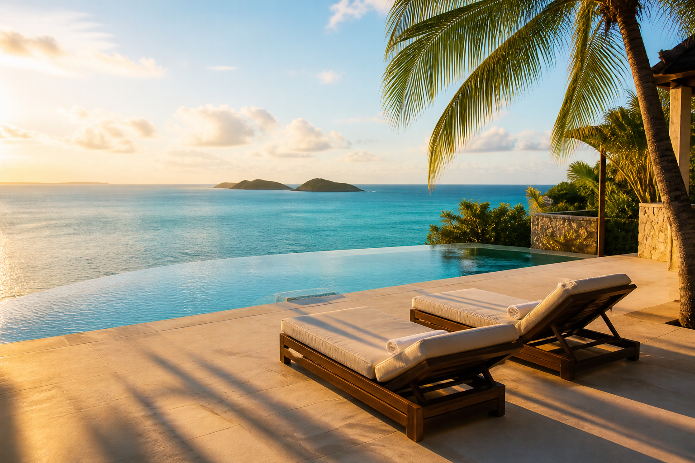
12월 따뜻한 나라 추천 TOP 5 (푸꾸옥·방콕·다낭·나트랑·발리)
12월 따뜻한 나라를 강수일로 줄 세웠습니다. 방콕 1일, 푸꾸옥 6일, 발리 17일, 다낭 18.7일, 나트랑 19.4일. 같은 동남아인데 12월에는 절반이 비를 맞습니다. 기온·수온·4박5일 총액과 리조트 고르는 기준까지.
맛집·미식
실제 영업 중인 가게만, 공식 메뉴판 가격과 영업시간·휴무까지 확인했습니다. 하루 동선(투어→식사→선물→숙소)까지 같이 계산합니다.

오사카 도톤보리·난바·우메다 맛집 5선 (한 끼 8,300원부터)
도톤보리·난바·우메다에서 실제로 영업 중인 다섯 곳. 공식 메뉴판 가격과 원화 환산, 휴무·대기·결제 함정, 그리고 오전 투어 뒤 점심·선물·숙소로 이어지는 하루 시간표를 정리했습니다.

도쿄 츠키지·신주쿠·시부야 맛집 5선 (아침 8,500원부터)
츠키지 장외시장 아침 6시 반부터 신주쿠 츠케멘, 시부야 스시까지. 13:30에 닫는 가게와 10시에 대기표를 뿌리는 가게를 시간표로 묶었습니다.

다낭 미케비치·한시장·호이안 맛집 5선 (세 끼 2만원)
반미 1,400원, 카오러우 1,900원, 해산물 1인 11,000원. 한시장·미케비치·호이안을 하루에 잇는 순서와 해산물 계산서에서 돈 새는 지점을 정리했습니다.

타이베이 융캉제·시먼딩·야시장 맛집 5선 (아침 2,200원)
푸항도우장 50대만달러, 아쭝몐셴 65대만달러, 융캉 우육면 220대만달러. 5:30에 열고 월요일에 쉬는 집들을 시간표로 묶고, 딘타이펑 원점이 포장 전용이 된 것까지 반영했습니다.
일본
교통패스 손익분기와 공항→시내 이동, 우기·성수기 변수까지 일본 일정의 숫자를 정리했습니다.

오사카·교토 3박4일 실경비 187만원 내역
11월 단풍 시즌, 인천 출발 3박4일 2인 기준. 항공·숙소·교통패스·식비·현장 추가금을 실제 판매가로 계산하고, 줄일 수 있는 항목과 줄이면 안 되는 항목을 갈랐습니다.
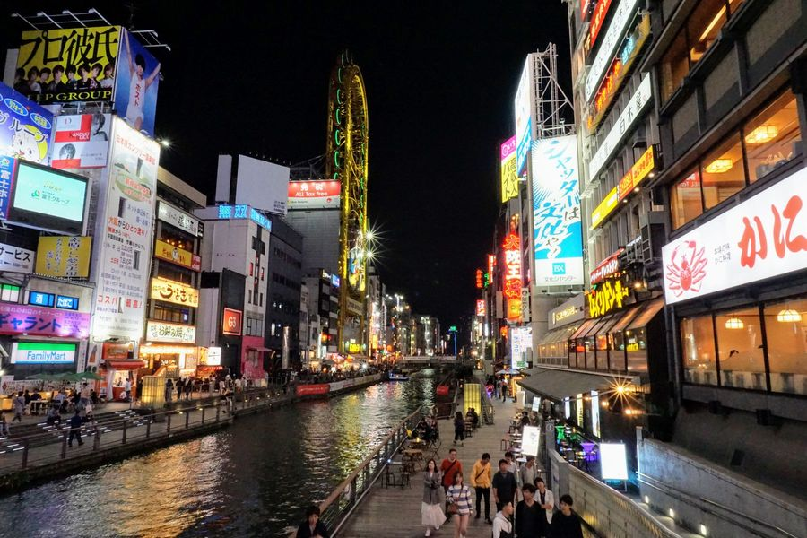
오사카 주유패스 본전 계산 (2026년판 3,500엔)
2026년판 1일권 3,500엔, 2일권 5,000엔. 하루를 24시간이 아니라 새벽 3시에 끊는 규칙, 시설 1회 제한, 국내 판매가와 엔화 정가의 차이까지 실제 계산으로 정리했습니다.
도쿄 지하철 패스 24·48·72시간 손익분기
24시간 800엔·48시간 1,200엔·72시간 1,500엔. 첫 개찰 시각부터 시간이 도는 구조, JR·버스가 안 되는 함정, 나리타에서 시내까지 교통까지 한 표에 정리했습니다.

도쿄 후지산 당일투어 vs 직접 가기
같은 ‘후지산 당일투어’인데 48,800원부터 200,000원대까지 있습니다. 가격 차이를 만드는 건 명소 수가 아니라 이동 시간과 귀환 시각입니다. 직접 가는 경우의 버스·열차 요금도 함께 계산했습니다.

후쿠오카→유후인, 기차 6,130엔 vs 버스 3,250엔
전 좌석 지정석이라 좌석이 열리는 시각이 정해져 있습니다. 예약 오픈 시각, 만석일 때 대안, 료칸 온천세와 유후인 버스패스까지 실제 금액으로 정리했습니다.

삿포로 겨울 방한 준비물과 예산
눈축제 시즌 삿포로의 실제 기온과 체감, 미끄럼 방지 스파이크의 필요성, 방한 예산 15만원 내역, 눈길에서 늦어지는 이동 시간까지 정리했습니다.

나리타·하네다에서 우에노·신주쿠 (1,060엔~3,600엔)
나리타에서 우에노까지 1,060엔, 신주쿠까지 3,600엔. 스카이라이너·N'EX·게이세이 본선·리무진버스를 2인 왕복 총액으로 놓고, 하네다는 숙소 동네별로 정답을 갈랐습니다.

교토 버스투어 vs 자유일정 (2인 160,900원 vs 91,300원)
버스투어 56,050원에 입장료·점심을 더하면 2인 160,900원, 자유일정은 91,300원. 7만 원 차이와 하루 네 곳을 도는 현실, 교토 1일권 1,100엔 손익분기를 함께 계산했습니다.

비에이 겨울 투어 75,050원과 눈축제 2월 4~11일
2027 삿포로 눈축제는 2월 4~11일. 비에이 겨울 버스투어 5만 원대부터 8만 원대까지 차이, JR로 직접 가는 2인 115,100원, 청의호수 라이트업 기간과 정기관광버스 2,000엔까지 정리했습니다.

간사이공항→USJ, 1,210엔 vs 86,900원
JR 1,210엔, 리무진버스 1,800엔, 단독차량 86,900원. 2인·4인 왕복 총액과 리무진버스 17:10 막차, USJ 입장권 8,400엔부터 오르는 수요 연동 가격까지 계산했습니다.

오사카 2박3일 패키지 61만 vs 77만
대구 출발 775,903원과 인천 출발 616,550원, 자유여행 568,200원. 15만 9천 원 차이의 정체와 2박3일의 실제 관광 시간 1.5일, 두 상품의 정반대 취소 규정을 비교했습니다.

도쿄 4일 80만 6,550원 vs 3일 96만 9,030원
1박이 적은 상품이 16만 2,480원 더 비쌉니다. 김해 출발 노선의 공급 때문인데, 후지산 투어·스카이라이너·메트로 패스를 더한 1인 실지출까지 계산했습니다.
일본 선물·기념품 리스트 (돈키호테·면세 환급 2026)
2026년 11월 1일부터 일본 면세가 리펀드 방식으로 바뀌었습니다. 세금 포함으로 결제하고 출국할 때 세관 키오스크에서 돌려받는 절차, 그리고 시로이코이비토·로이스·휴족시간·동전파스·이치란의 2026년 11월 정가와 구매처를 정리했습니다.
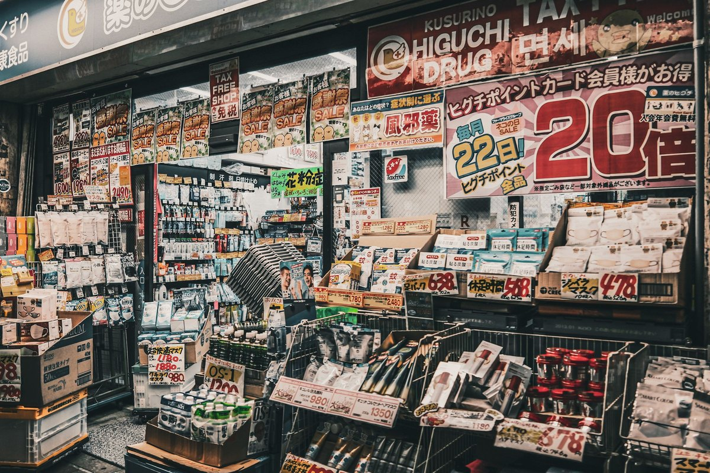
일본 쇼핑·선물 리스트 완벽정리 (돈키호테·5,500엔 면세)
2026년 11월 1일부터 일본 면세는 세금 포함 결제 후 출국 때 환급하는 방식입니다. 돈키호테·드럭스토어·공항·백화점의 강약, 한정 과자 10종·뷰티 10종·생활템 6종의 세금 포함 가격과 3만·10만·20만원 장바구니를 정리했습니다.

돈키호테·드럭스토어 면세 환급 2026 (공항 키오스크·5,500엔)
2026년 11월 1일부터 일본 면세는 리펀드 방식입니다. 돈키호테·드럭스토어에서 여권을 언제 보여주고, 세전 5,000엔(세금 포함 5,500엔)을 어떻게 채우며, 공항에서 짐을 부치기 전에 키오스크를 찍는 순서를 정리했습니다.

삿포로·오타루 3박4일 겨울 코스 & 2인 경비 (눈축제·비에이 버스투어)
삿포로·오타루 3박4일 겨울 일정을 JR 쾌속 에어포트·오타루 당일치기·비에이·후라노 버스투어로 짜고 2인 실경비를 계산했습니다. 눈축제(2027-02-04~11) 숙소는 1박 39만~47만원, 1월 중순은 17만~23만원입니다.
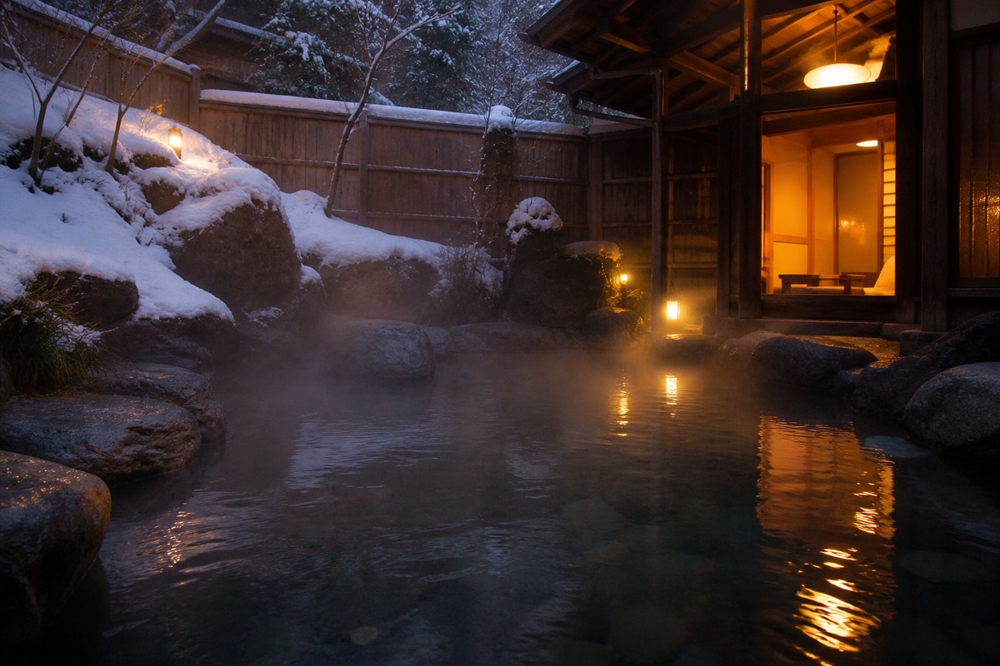
일본 료칸·온천 1박2식 실경비 & 입욕 에티켓 (유후인·하코네·조잔케이)
유후인·하코네·조잔케이 료칸을 같은 조건(2인·1박·세금 포함)으로 조회해 가격대를 잡았습니다. 1박2식 값에 무엇이 들어 있는지, 타투가 있을 때 대욕장 대신 쓸 수 있는 방법, 입욕 순서와 유카타·식사 예절까지 한 번에 정리했습니다.
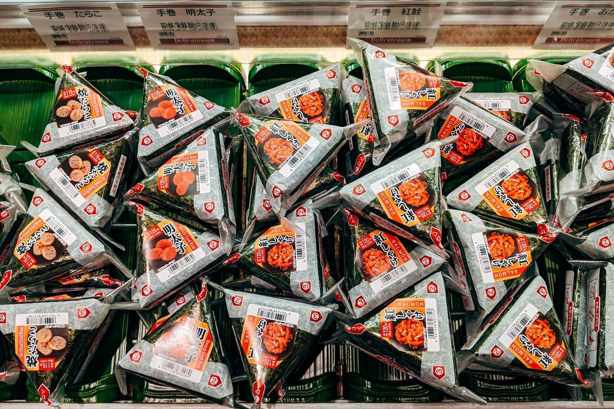
일본 편의점 추천템 & 결제 치트시트
세븐·로손·패밀리마트의 2026년 11월 가격과 600엔 이하 조합 3가지, 포장 8%·매장 10% 세금, 카카오페이·네이버페이·트래블카드·현금 결제법을 한 장에 정리했습니다.
국내
제주·부산·강원·속초·양양·전주·통영·인천은 요일과 시간대에 따라 같은 상품도 값이 달라집니다. 숙소 1박 최저가와 맛집 영업시간·라스트오더를 같은 날 기준으로 맞춰 계산했습니다.

제주 3박4일 동선과 실비 (요일로 19만원 차이)
2인 3박4일 기준 65만원부터 160만원까지. 항공·숙소·렌터카·식비를 요일별로 비교하고, 동/서/남부를 어떻게 끊어야 하루에 두 번 왕복하지 않는지 정리했습니다.

부산 요트투어 시간대 고르기 (17,000원 vs 249,000원)
같은 광안리 출발인데 14배 차이가 납니다. 일몰·야경 시간대별로 무엇이 보이는지, 합승과 단독의 실제 차이, 크루즈 8,000원과 비교까지 정리했습니다.
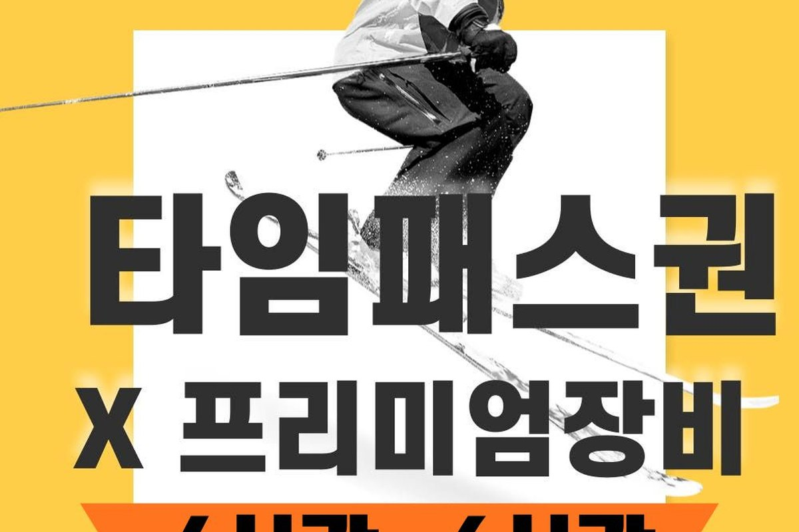
강원 스키장 4곳 비교 (리프트 76,000원~111,000원)
알펜시아 주간 76,000원, 용평 96,000원, 비발디 7시간 주말 99,000원, 하이원 종일 111,000원. 리프트만 비교하면 놓치는 셔틀·렌탈·숙박까지 총액으로 계산했습니다.

울릉도·독도 2박3일 (46만 9천 vs 개별 44만)
묵호 왕복 65,500원×2에 유류할증료 23,000원. 독도 유람선 70,800원, 숙소·차량까지 더하면 1인 444,800원입니다. 패키지 469,000원과 비교하고, 결항 대비와 복귀 편 시각까지 정리했습니다.

강릉 당일치기 KTX+버스투어 189,400원 (2인)
서울역 KTX 27,600원, 청량리 26,000원, 상봉 25,600원. 강릉 안에서 버스투어 39,500원을 쓸지 시내버스 1,530원을 쓸지, 2인 총액 6만 6,760원 차이로 계산했습니다.
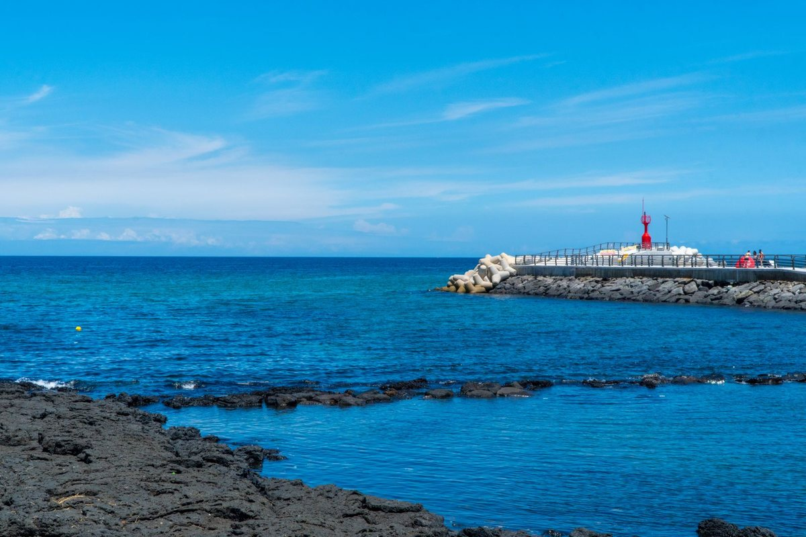
제주 15만·18만·43만원, 2박3일 세 상품의 차이
1박당 79,500원·63,000원·219,500원. 3박 4일이 1박당 가장 싼 이유와, 에어카텔 43만 9,000원에 든 그랜드하얏트·렌터카, 세 상품 모두 비어 있는 취소 규정까지.

서울 성수·북촌 1일 동선 (카페 5,500원·냉면 18,000원·육회 23,000원)
성수 카페에서 아침을 먹고 을지로 냉면, 북촌 만두, 광장시장 육회로 이어지는 하루 동선입니다. 네 곳의 2026년 11월 가격과 2호선 13분·도보 39분 같은 실제 이동 시간, 휴무일에 걸리는 지점까지 정리했습니다.

부산 해운대·광안리 1박2일 (복국 15,000원·요트 17,000원)
서면 국밥으로 시작해 해운대 어묵과 광안리 야경 요트로 끝나는 1박2일입니다. 24시간 국밥집 세 곳과 복국, 어묵 가격, 그리고 합승 17,000원과 단독 249,000원의 차이까지 정리했습니다.

강릉 겨울 바다 1박2일 (순두부 15,000원·짬뽕 12,000원·꼬막 37,000원)
초당 순두부, 안목 커피, 포남 꼬막, 교동 짬뽕을 이틀에 나눠 담았습니다. 강릉역에서 초당 22분·안목 46분·경포 29분, 그리고 버스로는 1시간 50분 걸리는 구간까지 정리했습니다.

여수 밤바다 1박2일 (게장 13,000원·케이블카 17,000원)
순이네 밥상 13,000원 돌게장으로 점심을 먹고, 해상케이블카 17,000원으로 돌산을 건너 꽃게장 정식까지. 2인 이상 주문과 수요일 휴무에 걸리는 지점을 먼저 확인하세요.

경주 황리단길 야경 1박2일 (한우국밥 12,000원·동궁과월지 3,000원)
향화정 꼬막무침비빔밥으로 점심을 먹고 대릉원과 동궁과월지 야경으로 밤을 채우는 1박2일입니다. 신경주역에서 황리단길 55분, 불국사 2시간 5분, 그리고 2인부터 주문되는 메뉴까지 정리했습니다.
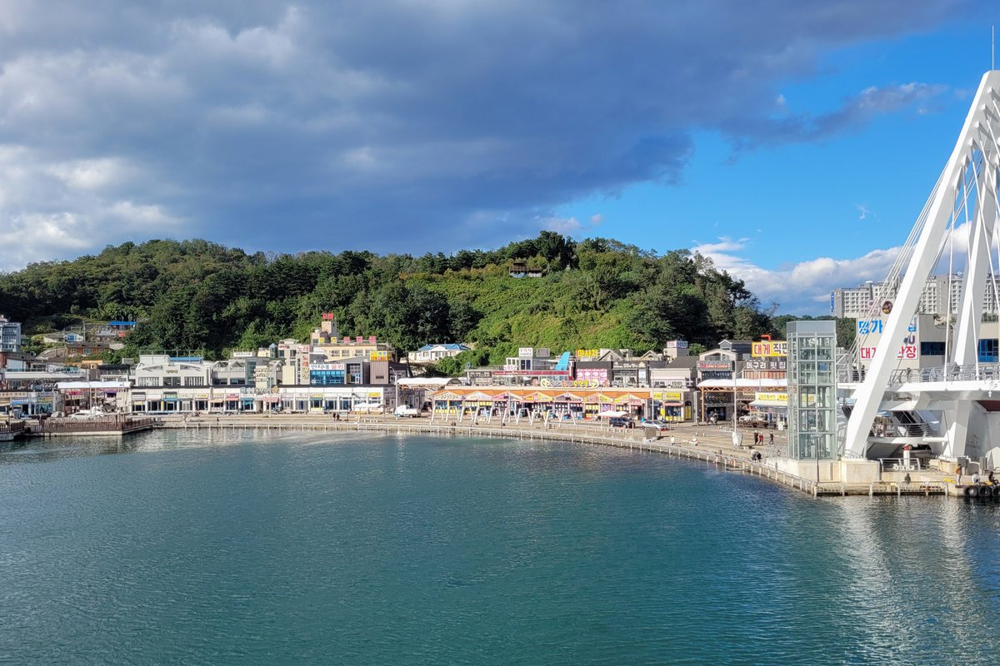
속초·양양 1박2일 코스 (물회 20,000원·닭강정 21,000원·생선구이 20,000원)
서울 09:51 출발이면 속초 12:40 도착. 88생선구이 모둠정식 20,000원, 만석닭강정 순살 21,000원, 봉포 물회 20,000원, 낙산해신물회 22,000원의 영업시간과 라스트오더를 동선에 맞춰 배치하고, 대포·청초호·낙산 숙소 5곳의 1박 최저가까지 정리했습니다.

전주 1박2일 한옥마을 미식 코스 (콩나물국밥 9,000원·비빔밥 14,000원)
서울역 09:41 KTX면 전주 11:37. 삼백집 콩나물국밥 9,000원, 가족회관 비빔밥 14,000원, 성미당 16,000원, 조점례 순대국밥 10,000원의 영업시간과 월요일 휴무를 동선에 맞추고, 한옥마을 도보권 숙소 4곳의 1박 최저가까지.

통영·거제 1박2일 (충무김밥 7,000원·다찌 45,000원·멍게비빔밥 15,000원)
서울 10:21 출발이면 통영 15:00. 은하수다찌 1인 45,000원(16:00 오픈·월·화 휴무), 뚱보할매김밥 7,000원, 동광식당 멍게비빔밥 15,000원, 오미사꿀빵 10개 11,000원을 시간에 맞춰 배치하고, 통영 숙소 3곳과 거제 숙소 4곳, 거제 30분 이동까지.

인천·영종도 1박2일 (차이나타운·을왕리·호캉스, 하얀짜장 10,000원)
공항 09:34 출발이면 인천역 10:50. 연경 하얀짜장 10,000원, 원조신포닭강정 중 19,000원, 을왕리 조개구이 중 70,000원(2~3인)의 영업시간과 월·화 휴무를 동선에 맞추고, 인천역↔을왕리가 버스 2시간 37분·택시 49분인 이유와 영종도 숙소 4곳까지.
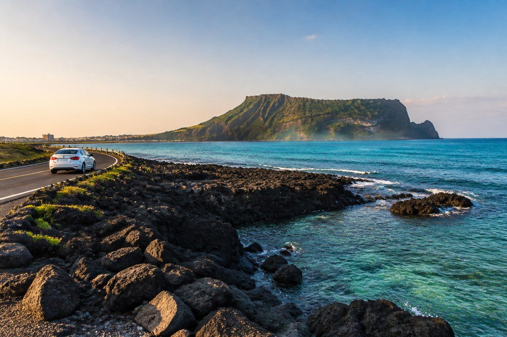
제주 3박4일 코스·렌터카 vs 뚜벅이·2인 실경비
제주 3박4일을 일차별 코스로 짜고, 렌터카(경차 27,482원~)와 버스·택시를 4일 총액으로 비교했습니다. 트립닷컴에서 조회한 숙소 4곳, 맛집 5곳의 가격·영업시간, 입장료 7곳을 같은 표에 넣었습니다.
동남아
우기와 공항 이동, 그리고 패키지의 숨은 비용까지. 동남아에서 총액이 갈리는 지점을 계산했습니다.
다낭·호이안 11월 우기 실전 (바나힐 3일권)
11월 강수량 486mm, 비 오는 날 21일. 호이안 침수, 바나힐 케이블카 중단, 공항 픽업 요금까지. 우기에 일정이 무너지지 않게 짜는 순서를 정리했습니다.

방콕 수완나품 공항에서 시내까지 (45밧 vs 500밧)
공항철도 45밧은 싸지만 환승이 붙고, 택시는 50밧 할증과 통행료가 따로 붙습니다. 4인·짐 많음·심야 도착까지 상황별로 실제 총액을 계산했습니다.
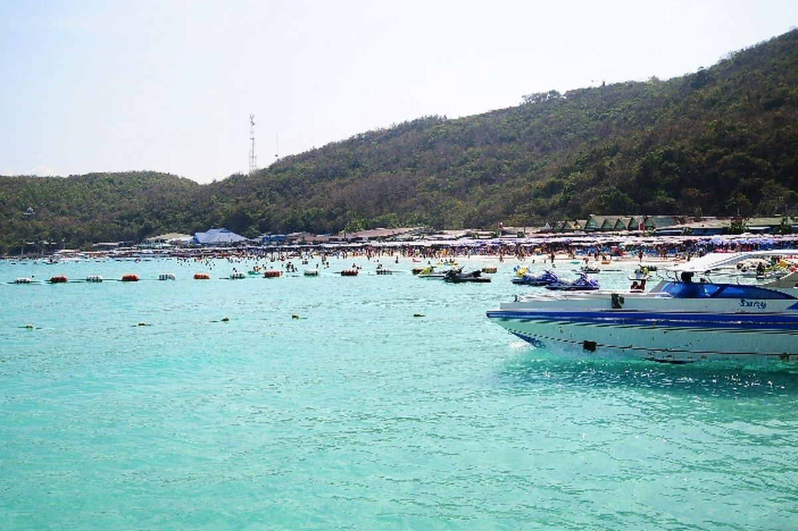
방콕 3박5일 66만·92만·108만 실지출
591,603원 상품에 경비 50달러를 더하면 661,603원. 920,530원 상품의 $230 혜택 내역, 쇼핑 3회가 사라지는 3시간, 29일 전부터 30%인 취소 규정까지 세 상품을 실지출로 비교했습니다.

베트남 eSIM 200원 vs 로밍 9,900원
매일 500MB eSIM이 200원, 3일 무제한이 17,850원입니다. 2인 5일 총액 2,000원과 통신사 로밍 99,000원을 비교하고, 500MB로 그랩·지도가 되는지와 설치 실패 이유를 정리했습니다.

다낭 54홀 vs 푸꾸옥 36홀, 홀당 1만 5,642원 차이
표시가 3만 3,400원 차이인 두 골프 패키지. 캐디팁·가이드팁·중식까지 넣은 실지출과 홀당 단가, 2인·4인 총액, 50일 취소 규정을 계산했습니다.

나트랑 달랏 투어 5만 4,905원 vs 자유여행 총액
달랏 14시간 투어 54,905원에 든 것과, 나트랑 5일 패키지 68만 7,730원·자유여행 73만 2,350원의 4만 4,620원 차이를 조합별 총액으로 계산했습니다.
베트남 다낭 기념품 리스트 (한시장·롯데마트 시세)
한시장 시세와 롯데마트 정찰가를 같은 품목으로 나란히 놓았습니다. 캐슈넛 500g 9만~11만동, 건망고 10만~12만동, G7 3만 4천동. 흥정 폭 15~20%와 위조품·검역 주의까지 정리했습니다.

태국 방콕 기념품 리스트 (빅씨·야돔·의약품 6병)
건망고 140g 129밧, 야돔 23밧, 타이거밤 10g 58밧, 차트라뮤 400g 90밧. 빅씨 랏차담리점과 로터스·왓슨스 가격을 같은 기준으로 놓고, 의약품 6병 기준과 2,000밧 택스리펀을 정리했습니다.
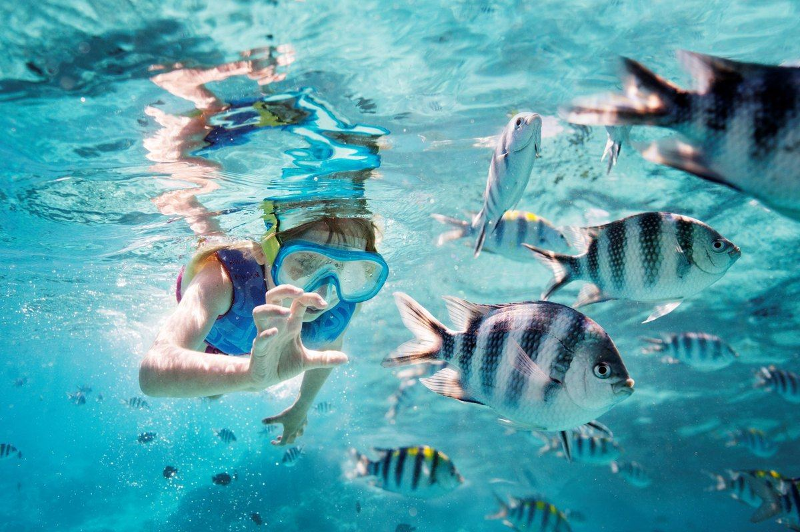
나트랑 3박4일 맛집·리조트 총정리 (반미 1,300원·숙소 5.5만원)
파나마 55,113원부터 아미아나 261,873원까지 나트랑 숙소 3곳과, 반미 1,300원·분까 2,340원·해산물 10,400원의 현지 식비를 한 표에 올렸습니다. 깜라인공항 49분, 달랏 투어 52,155원까지 포함한 1인 총액입니다.

동남아 선물 리스트 (다낭·나트랑·방콕 마트·시장 시세)
커피·캐슈넛·건망고·젤리는 롯데마트·빅씨마트, 라탄·소품은 한시장·담시장·짜뚜짝. 다낭·나트랑·방콕의 같은 품목 가격을 한 표에 놓고, 육가공품·생과일 반입 금지와 3만·5만원 장바구니를 정리했습니다.

동남아 그랩·볼트 공항택시 바가지 예방 (다낭·방콕·나트랑·발리)
다낭·나트랑·방콕·발리 공항에서 그랩과 볼트를 부르는 위치, 카드결제가 막힐 때의 대안, 호객·가짜 그랩·미터기 고장 수법을 끊는 방법을 정리했습니다. 볼트는 태국·말레이시아에만 있고 베트남·인도네시아에는 없습니다.
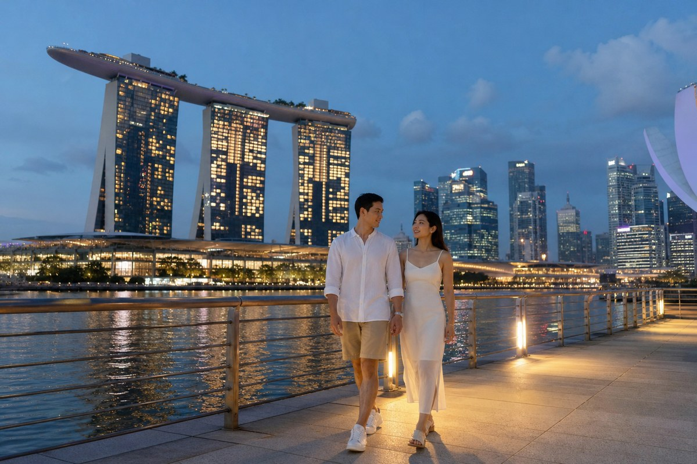
싱가포르 3박4일 코스·교통카드·2인 실경비 (마리나베이·센토사·호커센터)
싱가포르 3박4일을 마리나베이·센토사·가든스 바이 더 베이·호커센터 동선으로 짜고, 2인 실경비를 계산했습니다. 교통카드는 컨택트리스가 3일 기준 26,912원으로 가장 싸고, 가든스 46·스카이파크 35·센토사 익스프레스 4싱가포르달러가 기본 관광입니다.

방콕·파타야 3박5일 코스·이동수단·2인 실경비
방콕·파타야 3박5일을 시간 단위로 짜고, 공항철도 45밧부터 파타야 버스 144밧(2026-10-13 인상)까지 실제 요금으로 계산했습니다. 숙소 4곳·맛집 5곳·사원 3곳 입장료를 같은 표에 넣었습니다.
준비물·경비
출발 전에 사는 것과 현지에서 사는 것, 총액이 어떻게 달라지는지 비교합니다.
일본 eSIM·유심·포켓와이파이 총액 비교
4일 2인 기준으로 세 방식의 총액을 계산했습니다. 매일 500MB 제한형과 완전 무제한형이 언제 갈리는지, 테더링이 필요한 순간, 도착 전에 설치해야 하는 이유까지 정리했습니다.

보조배터리 2개·액체 100ml, 2026년 4월에 바뀐 기내 규정
2026년 4월 20일부터 1인 2개·160Wh 이하·기내 충전 금지. mAh를 Wh로 바꾸는 계산, 액체류 100ml·1L 지퍼백, 우기·겨울 여행지별 짐과 준비물 8종 가격까지.
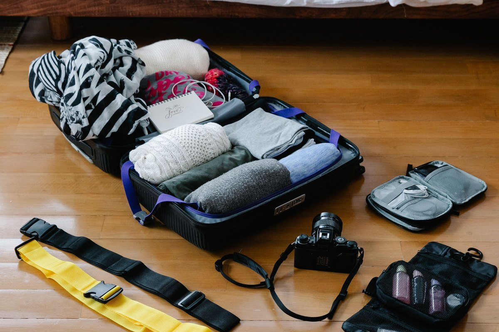
환전·트래블카드 비교 & 짐싸기 체크리스트 실전판
같은 10만엔을 바꿔도 공항 창구 37,520원, 시내 14,590원, 은행 앱 90% 우대 1,460원입니다. 트래블월렛·트래블로그·토스뱅크의 환전·결제·ATM·재환전 수수료와 D-30부터 D-0까지 짐싸기, 보조배터리·액체류 규정을 한 번에 정리했습니다.
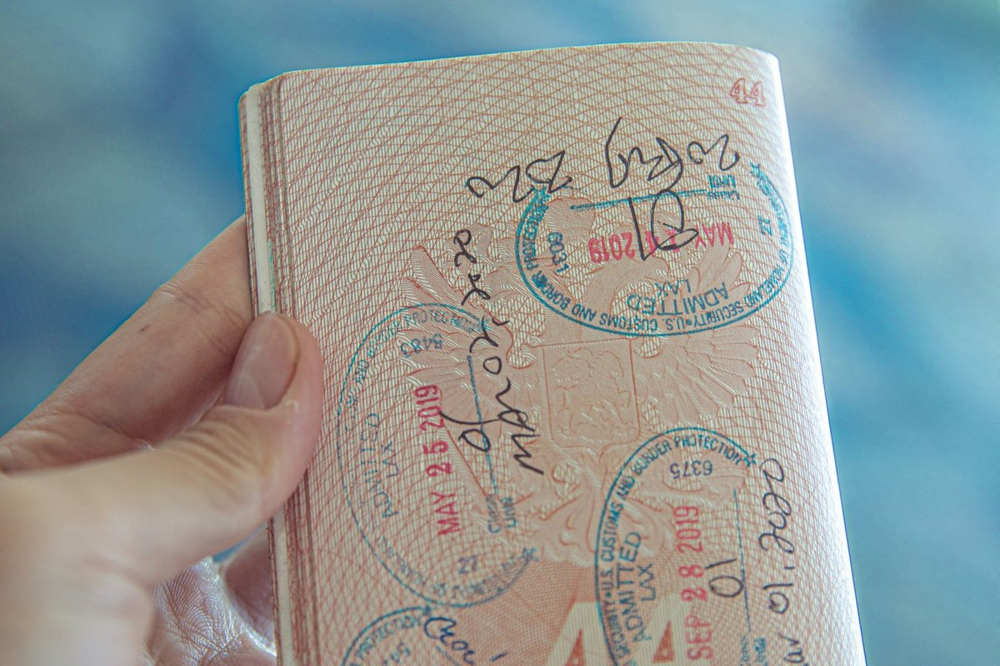
여권 신규·재발급 수수료 2026 (10년 58면 52,000원·긴급여권)
2026년 3월 1일부터 여권 발급 수수료가 2,000원 올랐습니다. 10년 58면 52,000원, 26면 49,000원, 온라인 재발급은 근무일 8일입니다. 긴급여권 50,000원의 조건과 미국·베트남에서 통하지 않는 이유, 나라별 잔여 유효기간(일본은 6개월 규칙 없음)까지 공식 기준으로 정리했습니다.

나라별 입국신고서·전자여행허가 (비짓재팬웹·TWAC·TDAC·ETA·ESTA)
일본 비짓재팬웹은 무료, 대만 TWAC는 도착 7일 전부터, 태국 TDAC는 3일 전부터, 베트남 PAI는 72시간 전, 싱가포르 SGAC는 3일 전부터 냅니다. 홍콩은 신고서가 없고, 영국 ETA £20·미국 ESTA $40.62는 따로 받아야 합니다. 공식 주소와 가짜 대행 사이트 구별법까지 정리했습니다.
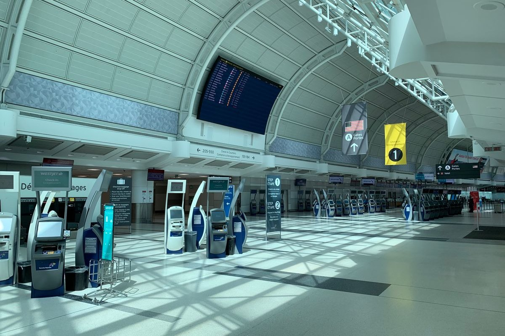
공항 3시간·체크인·면세 800달러 (2026 관세청 기준)
인천공항은 출발 3시간 전, 국제선 체크인은 60분 전에 닫힙니다. 액체는 100ml·1L 지퍼백, 보조배터리는 1인 2개·160Wh 이하로 기내에만. 입국 면세는 1인 800달러, 술은 2리터·400달러 이하이면 병수와 상관없습니다(2025년 병수 제한 폐지).

eSIM·유심·로밍과 여행자보험·영사안전콜센터
같은 4일 여행에서 eSIM 2,360원과 로밍 39,600원까지 벌어집니다. QR은 출발 1~2일 전 집에서 설치하고, 듀얼심으로 한국 번호를 살려 둡니다. 여행자보험은 휴대품(분실 제외)·항공 지연(2시간 vs 4시간)·해외 의료비(상해·질병 별도) 세 가지를 먼저 보세요.
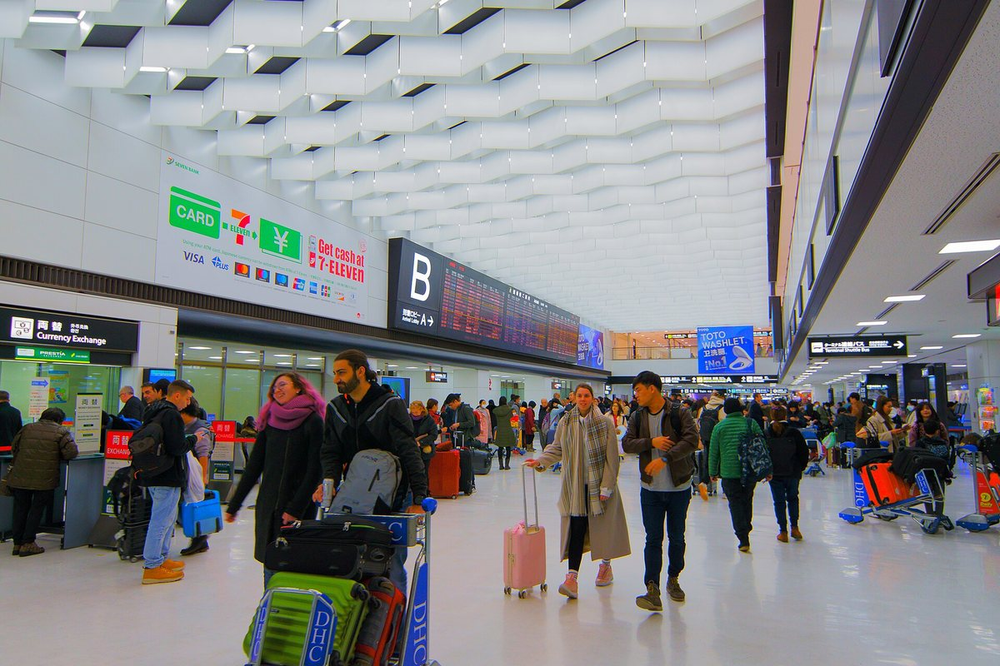
비짓재팬웹 2026 등록 방법·QR·가족 등록
비짓재팬웹은 무료이고 의무는 아닙니다. 2024년 1월 입국심사·세관 QR이 하나로 통합돼 공항에서 같은 QR을 두 번 씁니다. 계정부터 QR까지 6단계, 가족 10명 등록, 전자신고 게이트 7개 공항, 자주 막히는 입력 6가지를 2026년 11월 1일 조작설명서 3.17판 기준으로 정리했습니다.

인천공항 스마트패스·주차·라운지·면세 30분 줄이기
스마트패스는 출국장 입구만, 자동출입국심사는 심사대만 줄입니다. 온라인 체크인·기내 수하물·스마트패스·SES를 겹치면 20~40분이 줄어듭니다. 4일 주차 36,000원, 라운지 60,080원, 면세 800달러·술 2L까지 2026년 11월 공식 안내로 계산했습니다.
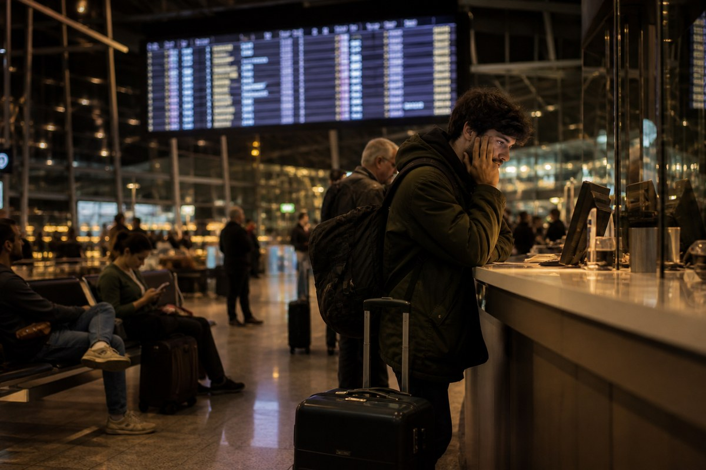
해외여행 지연·결항·수하물 분실·트래블카드 분실 대처 순서
지연·결항 때 받아야 할 지연 확인서와 EU 261·국내 기준 보상액, 수하물 PIR과 1,519 SDR 한도, 트래블카드 분실 시 30분 대응, 여행자보험 청구 서류를 한 흐름으로 정리했습니다.

항공권 싸게 사는 법 & 수하물 규정 비교 (대한항공·아시아나·제주·진에어·티웨이·피치·비엣젯)
대한항공·아시아나와 제주항공·진에어·티웨이·피치·비엣젯의 기내(115cm·10kg)와 위탁(23kg·15kg·0kg) 기준을 한 표에 놓았습니다. 같은 여정도 운임 이름과 사전 구매 여부에 따라 2인 4만~8만원이 갈리고, 편도 조합·경유에서 확인할 것까지 정리했습니다.

혼자 vs 2인 해외여행 1인당 실비 (도쿄·다낭·파리 숙소·공항·식비·투어)
같은 날짜·같은 호텔을 1인과 2인으로 각각 조회해 1박 요금을 비교했습니다. 차이는 거의 전부 숙소에서 나고, 식비·투어·교통은 인원과 무관하게 1인분씩 붙습니다. 도쿄·다낭·파리 3박4일 1인당 총액을 같은 기준으로 계산했습니다.

캐리어 20·24·26·28인치 크기·무게 & 항공사 기내/위탁 기준
20인치가 정말 기내에 들어가는지, 24인치에 15kg을 넣을 수 있는지 인치별 실제 치수와 무게로 계산했습니다. 대한항공·아시아나·진에어·티웨이·제주·에어부산·피치·비엣젯 8곳의 기내 115cm·10kg, 위탁 158cm·23kg 기준을 표로 묶었습니다.

6도시 공항→시내 이동·막차·심야 도착 총정리
오사카·도쿄·후쿠오카·방콕·다낭·타이베이 6개 공항에서 시내까지 실제 요금과 막차를 한 표에 놓았습니다. 23시 이후 도착하면 남는 선택지와 2인 비용까지 계산했습니다.

eSIM이 안 터질 때 1분 해결 가이드
eSIM을 설치했는데 인터넷이 안 되는 원인은 대부분 세 가지입니다. 아이폰·갤럭시 설정 경로, 원인 7가지, 통화비 폭탄 막는 설정, 로밍 9,900원과 eSIM 590원의 차이를 정리했습니다.
대만·괌
짧은 비행으로 가는 두 곳은 '무엇이 포함됐나'로 총액이 갈립니다. 조식·패스·현장 입장료까지 넣어 계산했습니다.
타이베이 예스진지 2인 105,200원
투어 35,000원에 예류 120NT·천등 150NT·광부체험 50NT·황금박물관 80NT가 붙습니다. 2인 105,200원, 같은 코스 11,400원 상품과의 차이, 겨울 강수일 19일까지 정리했습니다.
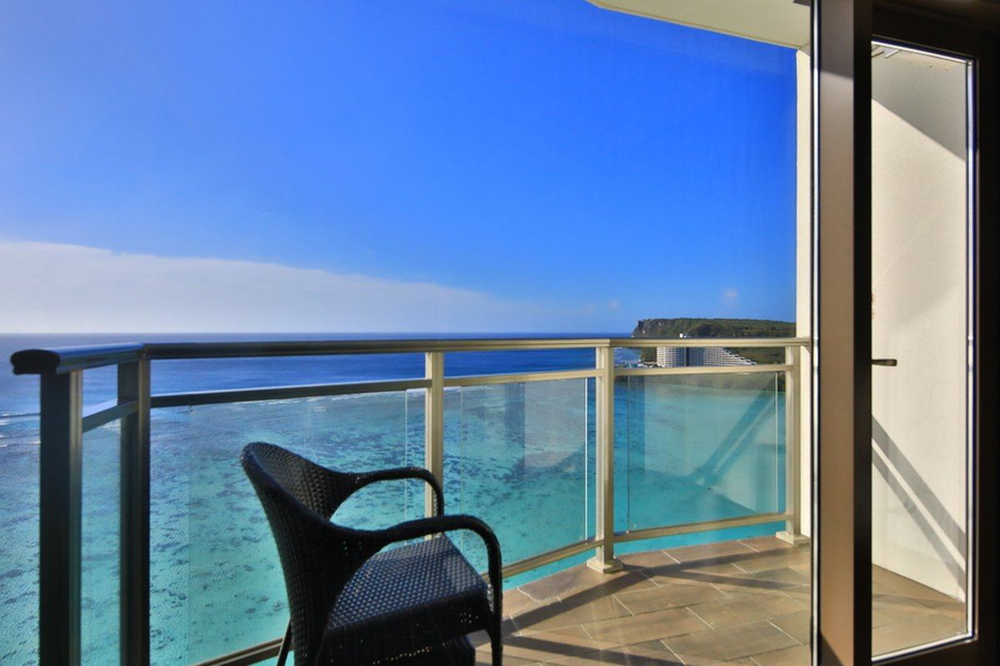
괌 리조트 3곳, 조식·패스까지 실지출
리가로얄 581,030원(룸온리), PIC 792,490원(골드패스), 두짓타니 949,630원(전일정 조식). 조식 4일 2인 25만 원을 넣은 실질 비교와 9일 전부터 환불 불가인 취소 규정까지 정리했습니다.
대만 펑리수·기념품 리스트 (치아더·유통기한 40일)
치아더 12개입 456대만달러, 써니힐스 10개입 550대만달러. 같은 치아더도 까르푸 520, 편의점 550으로 갈립니다. 유통기한 40일과 15일의 차이, 부서짐 방지, 돼지기름 과자 검역까지 정리했습니다.
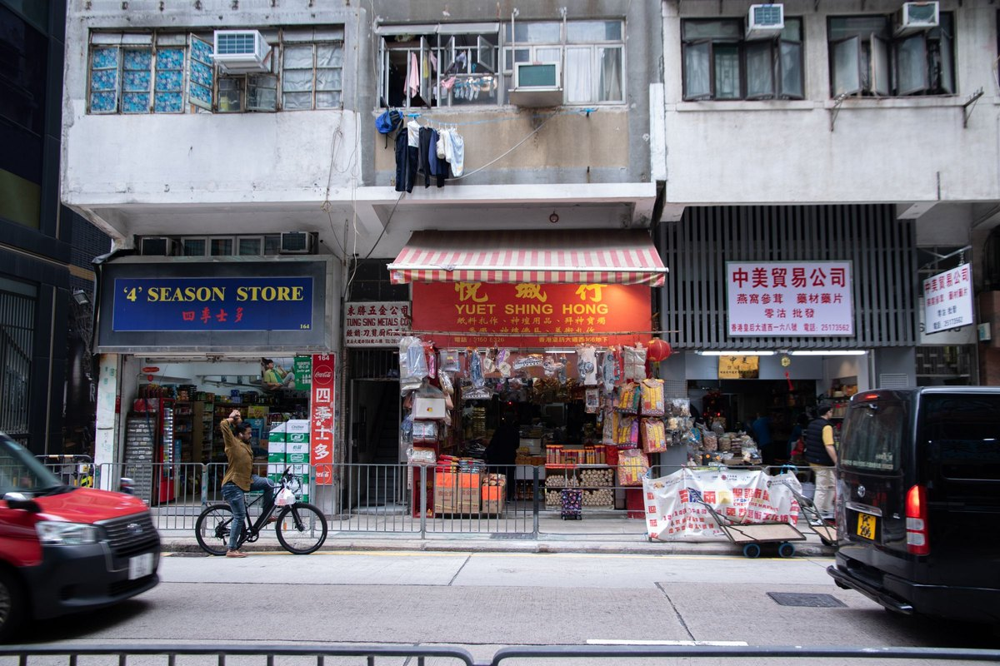
대만·홍콩 선물 리스트 (펑리수·제니베이커리·이지카드)
대만은 같은 날 같은 매장 2,000대만달러부터 5% 환급, 홍콩은 부가세가 없어 표시가가 최종가입니다. 치아더·써니힐스·누가크래커·이지카드와 제니베이커리·기화병가·타이거밤의 가격, 구매처와 반입 주의를 정리했습니다.
유럽·장거리
유로스타·고속열차 시간과 공항 이동 요금, 박물관 입장료, 국가별 텍스리펀 최소 금액까지 공식 사이트 값으로 맞췄습니다. 숙소는 트립닷컴에서 같은 날짜(체크인 11-28·성인 2명·세금 포함)로 조회한 1박 요금입니다.

이탈리아 9일 3상품 실지출 289만·305만·325만
274만·290만·310만 원 상품 모두에 가이드 경비 €90(14만 5,800원)이 붙습니다. 실지출 289만·305만·325만 원으로 다시 놓고, 쇼핑 3회 하루와 8박·7박의 차이를 계산했습니다.

스페인·포르투갈 9일 vs 11일, 2박에 76만 4,460원
8박 9일 280만 5,240원과 10박 11일 352만 1,100원. 가이드 경비 €90·€120까지 넣은 실지출과 하루·1박당 단가, 20일 전 취소 위약금까지 계산했습니다.
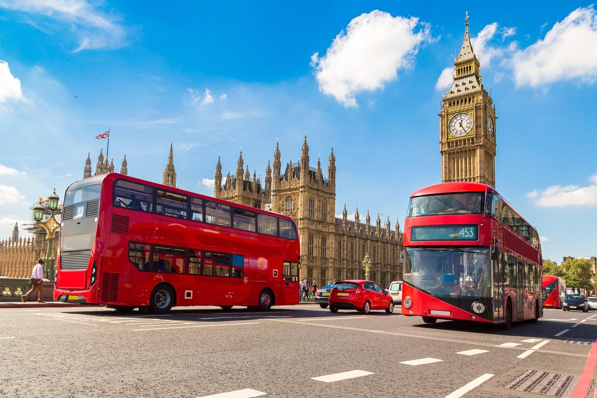
서유럽 4개국 10일, 표시가 369만 5,500원의 실지출 392만 7,500원
표시가 369만 5,500원에 가이드·기사 경비 €100과 영국 ETA가 붙어 392만 7,500원. 하루당 39만 2,750원을 유럽 9일 상품 3개와 나란히 비교했습니다.

미서부 4대캐년 9일, 현장에서 33만 5,120원이 더 붙습니다
표시가 320만 30원에 기사·가이드 경비 $196과 ESTA가 붙어 353만 5,150원. ESTA를 직접 받을 때와 대행할 때의 차이, 렌터카로 직접 도는 경우의 준비물을 정리했습니다.

미동부·캐나다 10일, 항공사만 다른 두 상품 58만 2,000원 차이
일정·호텔이 같고 항공사만 다른 두 상품. 실지출 554만 9,430원과 613만 1,430원, 두 상품 모두에 붙는 31만 2,400원, 안내에 없는 캐나다 eTA까지 정리했습니다.
호주·뉴질랜드 10일, ETA·NZeTA 11만 7천원이 상품가 밖
표시가 388만 5,500원에 호주 ETA와 뉴질랜드 NZeTA가 붙어 400만 2,500원. IVL 포함 NZeTA 계산과 남반구 계절, I 타입 플러그 준비물까지 정리했습니다.
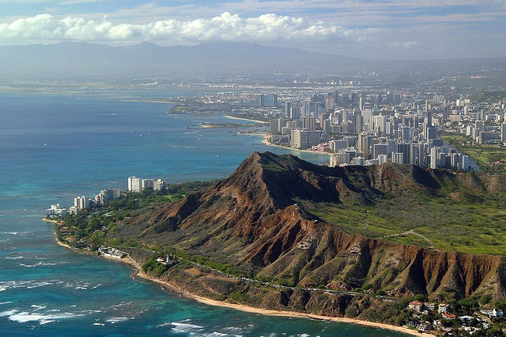
하와이 8일 vs 7일, 1박 차이 1만 9,400원인데 취소는 다릅니다
표시가 차이 1만 9,400원, 실지출 차이 11만 8,800원. 20일 전 취소 위약금이 15%와 50%로 갈리는 두 상품을 객실·일정·ESTA까지 비교했습니다.

파리·런던 5박7일, 유로스타 £39·2시간 16분으로 두 도시
파리 3박 + 런던 2박, 유로스타 한 번으로 끝나는 5박7일입니다. 유로스타 £39·2시간 16분, CDG RER B €14, 히드로 익스프레스 £26, 루브르 비유럽 성인 €32까지 2026-11-21 확인값으로 2인 실지출 185만 9,000원을 계산했습니다.

이탈리아 6박8일 — 로마·피렌체·베네치아 열차 97분·134분
로마 3박 + 피렌체 2박 + 베네치아 1박, 이동은 전부 고속열차입니다. 로마→피렌체 97분(€29.90), 피렌체→베네치아 134분, 바티칸 온라인 €25(마지막 일요일 무료), 콜로세움 투어 69,154원까지 2026-11-21 조회값으로 정리했습니다.
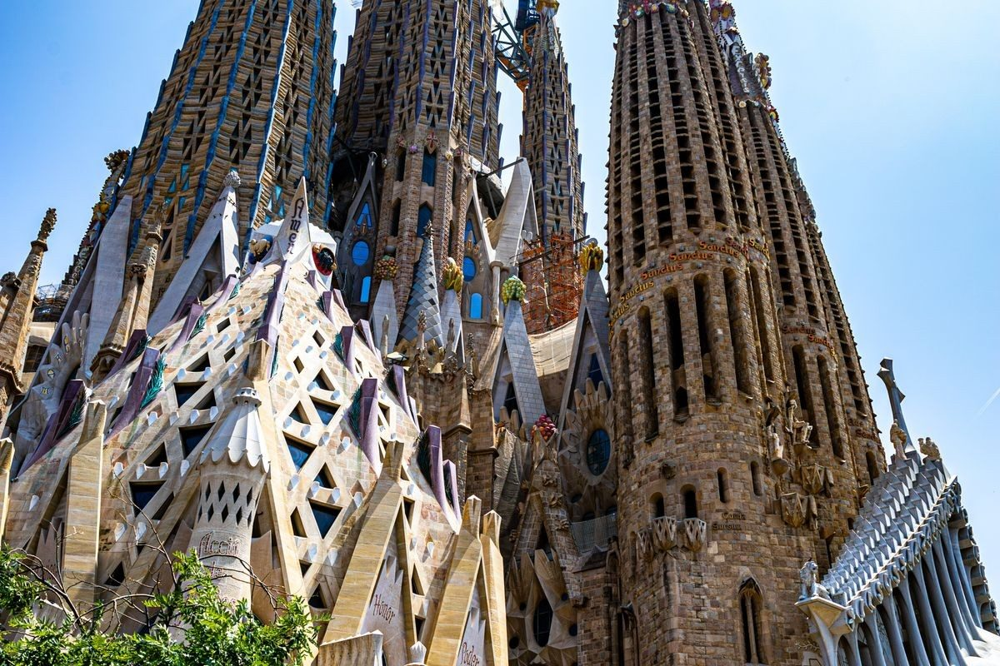
스페인 5박7일 — 바르셀로나 가우디, 마드리드 3시간 28분
바르셀로나 3박 + 마드리드 2박. 사그라다 파밀리아 가이드 투어 79,453원, 엘프라트공항→카탈루냐 에어로버스 €7.75(34분), 바르셀로나→마드리드 3시간 28분까지 2026-11-21 조회값으로 2인 실지출 75만 7,174원을 계산했습니다.

유럽 쇼핑 리스트 & 텍스리펀 (프랑스 €100·이탈리아 €70·스페인 0원)
파리 몽주약국·버터, 로마 마비스·트러플·포켓커피, 런던 포트넘앤메이슨, 바르셀로나 꿀·올리브를 어디서 사는지와 함께, 프랑스 €100·이탈리아 €70·스페인 최소 없음·영국 공항 환급 없음까지 각국 공식 기준으로 정리했습니다.
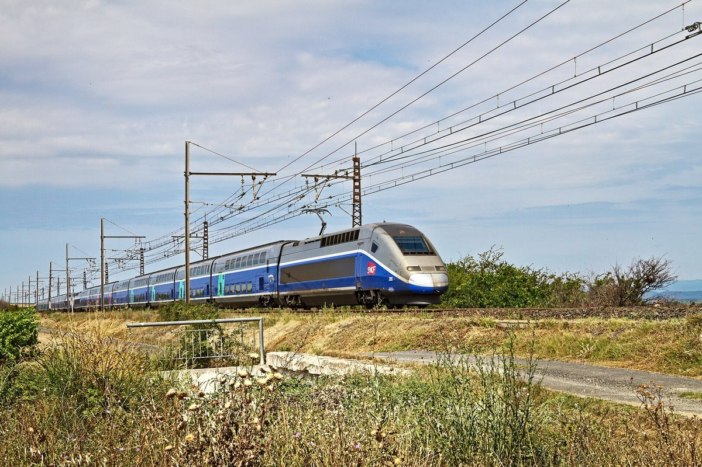
유레일패스 vs 구간권 — 2026 인터레일 통합·예약비
2026년 9월 10일 유레일이 인터레일로 통합됐습니다. 성인 2등석 4일권 283유로(416,587원), 7일권 381유로. TGV·프레차로사·유로스타 예약비와 파리~바르셀로나 39유로 대 259유로를 같은 표에 놓고 손익분기, 좌석 예약 방법, 기차역 소매치기 예방까지 정리했습니다.
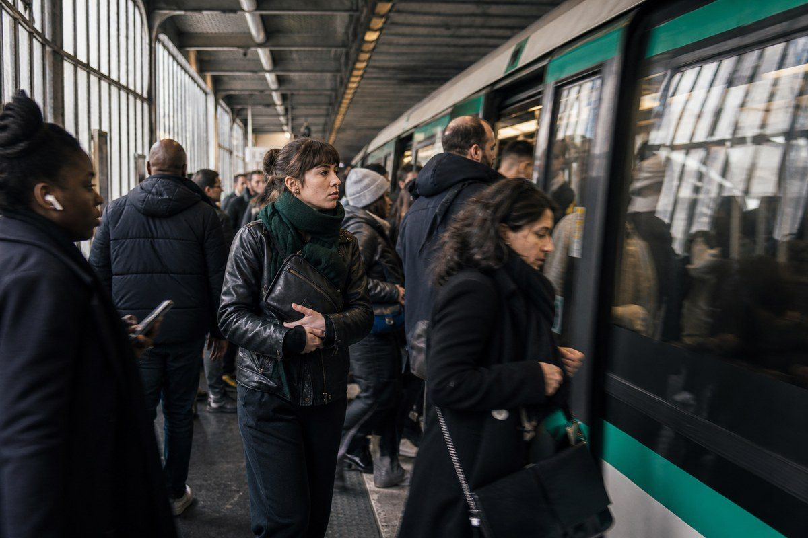
유럽 소매치기 예방·짐 보관·공항 텍스리펀 (파리·런던·로마·바르셀로나)
파리·런던·로마·바르셀로나에서 소매치기가 몰리는 동선과 수법, 짐 보관 요금(€3.25~9.50), 공항 텍스리펀 순서를 정리했습니다. 프랑스 €100, 이탈리아 €70.01, 스페인 최소 금액 없음, 영국은 공항 환급이 없습니다.
중국
장가계·원가계는 노팁·노옵션이어도 특별약관과 최소 인원이 따로 붙습니다. 예약금 환불 조건과 무사증 시한부터 확인하세요.

계절·월별
봄·여름·가을·겨울 4편은 19개 도시 228개 월의 평년값에서 골라 정리했습니다. 같은 계절이라도 강수일이 5일과 19일로 갈리는 지점부터 보세요.

3~5월 봄 여행지 추천 BEST 8 (벚꽃 개화 순서·기온·경비)
봄 여행지는 '벚꽃' 한 단어로 묶이지 않습니다. 같은 4월에도 제주 14.2도·비 9.4일, 서울 12.6도·비 6.5일, 타이베이 22.5도·비 14.5일입니다. 국내 4곳과 일본 3곳, 타이베이까지 8곳을 개화 순서·평년 기온·강수일·경비로만 비교했습니다.
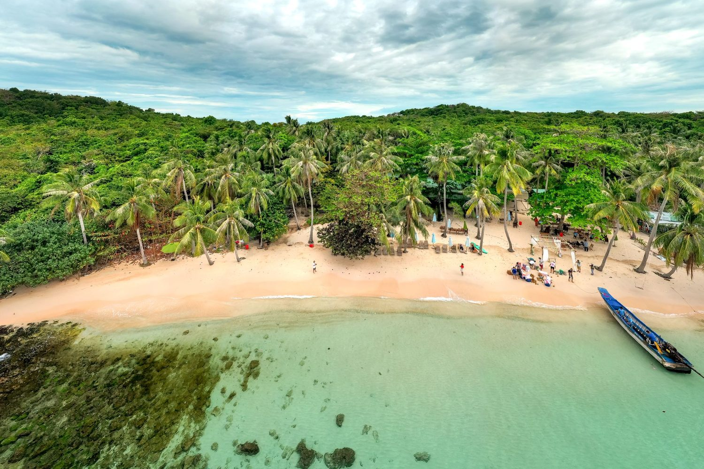
6~8월 여름 여행지 추천 BEST 8 (국내 피서·동남아·서늘한 유럽)
여름 여행지는 '바다'가 아니라 '비'로 갈립니다. 7월 강수일은 강릉 16일, 나트랑 8.4일, 파리 7.4일입니다. 국내 피서 4곳과 동남아 2곳, 19도 유럽 2곳의 7~8월 평년값과 4박5일 경비를 같은 표에 놓았습니다.

9~11월 가을 여행지 추천 BEST 8 (단풍 시기·10월이 비 적은 달)
가을 여행의 실패는 '9월 태풍'과 '11월 한파'에서 나옵니다. 경주 9월 강수량 194mm가 10월 108mm로 줄고, 비 온 날도 12.2일에서 6.7일이 됩니다. 국내 단풍 4곳과 일본 2곳, 유럽 2곳을 단풍 시기·기온·경비로 비교했습니다.

12~2월 겨울 여행지 추천 BEST 8 (따뜻한 휴양 4 vs 설경 4)
12월 평균기온은 방콕 27.3도, 나트랑 24.7도, 다낭 22.2도, 홍콩 18.2도, 강릉 3.3도, 서울 0.2도입니다. 따뜻한 휴양 4곳과 설경 4곳을 같은 표에 놓고 기온·강수일·경비로 갈랐습니다.
숙소·예약
검색어를 줄이거나 필터를 ‘전체’로 바꿔 보세요. 예: 오사카 · eSIM · 우기 · 리조트 · 패스